Android
QSSTV-Experimental runs on Android phones and tablets with a screen of its own, made for fingers: three screens (Receive, Transmit and Gallery), a settings list without OK and Cancel, and a first-start setup. It receives and sends pictures through the phone's own microphone and speaker, a headset cable or a USB audio interface, and it can key a transmitter and read its frequency through a USB serial interface (Digirig and similar). The modes, the pictures and the radio side work as described in the rest of this guide; this page covers the Android screens.
Requirements and installation
- Android 10 or newer. The phone version is for 64-bit ARM processors, which is nearly every current phone. There is also a build for Android on x86_64 (the emulator, some Chromebooks).
- Install it from Google Play, or download the
.apkfile from the releases page and open it (Android asks once to allow installing from your browser or file manager). - Permissions are asked when they are needed, with the reason on the screen: the microphone at the sound step of the first-start setup, notifications (Android 13 and newer: the one that tells you the program is receiving) right after, the camera when you tap Camera, the location when you switch the position on, and a USB adapter when you plug it in.
The first start
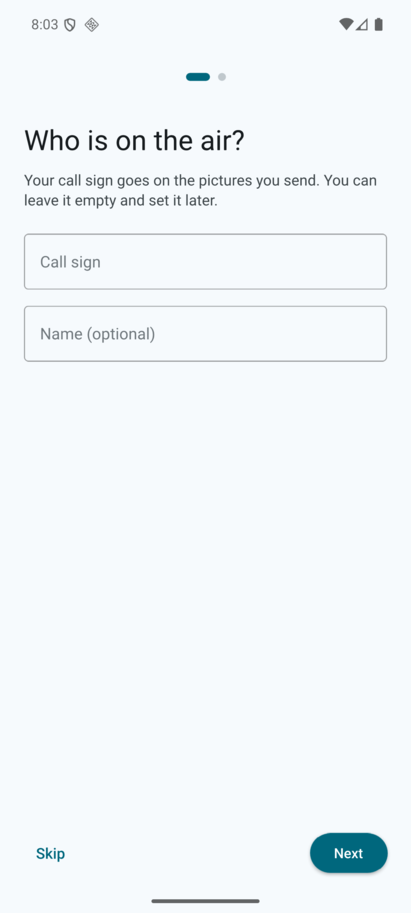
The first time the program starts it shows three short steps. Each can be skipped with Skip, and Back goes to the step before.
- Who is on the air? Your call sign, first and last name and city. They can go on the pictures you send. You can leave them empty and fill them in later under Settings > Operator. The call sign is also what the program sends in morse code (Text sent as CW under Settings > Advanced > CW and waterfall) until you write a text of your own there.
- Where does the sound come from? Start with the phone's own microphone and speaker. The system asks to allow the microphone here. The level meter on this page moves with the sound, so a wrong choice shows at once; Microphone and Speaker change it if you use a cable.
- Control your radio? Shown only when a USB adapter is plugged in; Set up the radio opens the radio settings. Skip it if you use VOX.
The setup does not come back, and it is not shown when a call sign is already set.
The screens
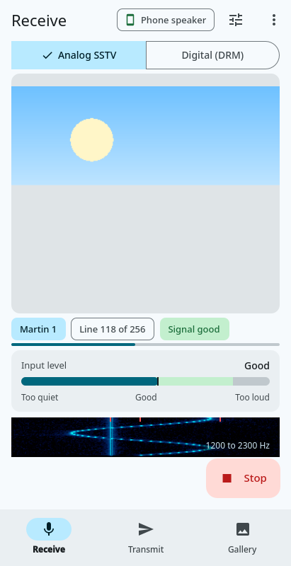
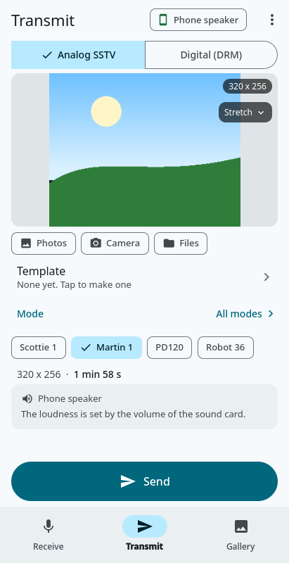
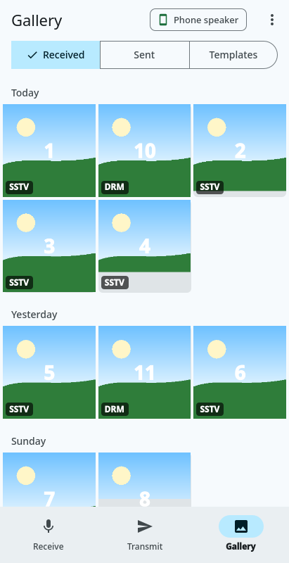
The bar at the bottom switches between Receive, Transmit and Gallery (on a tablet or a phone held sideways it is a column at the left edge). At the top of each screen are its title, the route chip that says where the sound goes (Phone speaker, or the USB interface; a tap opens the sound settings) and the menu ⋮: Decode a recording... on Receive, Transmit tools... on Transmit, and on every screen Settings, Help (this guide) and About.
Under the title of Receive and Transmit is one button with two parts: Analog SSTV and Digital (DRM). It is the same choice on both screens; switching one switches the other.
The Back button (or gesture) closes what is in front: a dialog or sheet, the picture viewer, a page of the settings, the selection in the gallery. On Receive with nothing open it sends the program to the background and keeps it receiving. To stop listening, tap Listening under the picture on the Receive screen (above the level meter when the phone is held sideways; the notification has a Stop button too).
Receive
- The program listens by itself when it starts. The picture grows line by line as it arrives; the chips under it show the state (Listening, or Stopped) and the mode (Mode: Auto, or the mode being received, with the line count). A tap on Mode opens the list of modes: leave it on Auto and the program finds the mode itself, or pick one to listen for that mode only (the chip is then highlighted, and the choice is kept until you change it). It is not offered while a picture is coming in, nor for Digital (DRM).
- The input level is a bar with a green target zone and words: Too quiet, Good, Too loud. Under it is the waterfall of the received sound; it fills the rest of the screen.
- The first chip under the picture (above the level meter when the phone is held sideways) starts and stops the receiver: Listening (with a stop square) stops it, Stopped (with a play triangle) starts it again. It is there between pictures; while one is coming in, the notification's Stop still ends the receiving. The control with the sliders at the top right opens the receive options: save pictures automatically, and correct the slant of pictures from a radio whose clock is off (both are on when you first start the program). More of them are under Settings > Advanced > Receive.
- When a picture is complete, Saved to Gallery appears with View.
- If the microphone is blocked, a banner says so, with Allow to open the system settings; the receiver starts when you come back.
Transmit
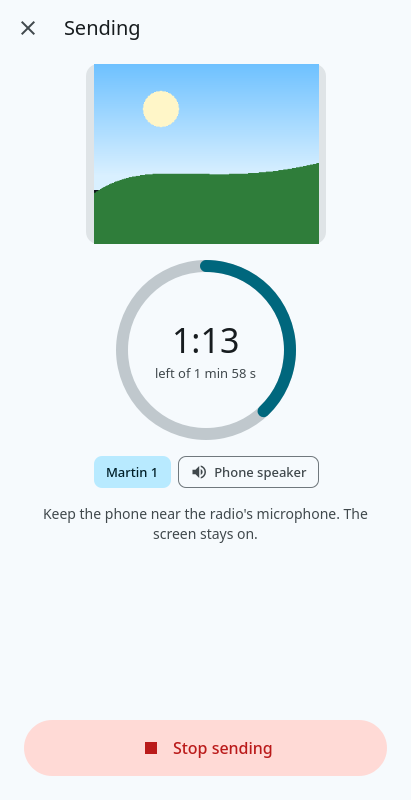
- The picture. Photos opens Android's photo picker, Camera takes a picture, Files opens the file picker. A picture shared from another app (Share > QSSTV-Experimental) arrives here too, and so does one chosen in the Gallery.
- Framing. How the picture fits the frame of the mode: the small dark button at the top right of the picture, under its size, names the choice. Tap it to see the list. Stretch fills the frame and may squash the picture, Crop fills it and cuts off the edges, Fit shows the whole picture with bars where it is too narrow, and with Free you place it yourself: pinch to zoom, drag to move (a hint on the picture says so until you have moved it), and Reset, a button that appears under the framing one, puts the whole picture back. A single picture on the Digital (DRM) side is always Free, so the framing button is not there. The choice is kept, and it cannot be changed while a picture is being sent.
- Template. The template that goes on the picture. Tap the row to choose one from the list (with a small picture of each), None to send the picture as it is, to Edit this template or to make a New template; see Templates below.
- Details. Appears under Template while a template is on the picture. Tap it to set who the picture is for, the operator name and the report; your call sign comes from the settings.
- The mode. The four buttons are favorites (Scottie 1, Martin 1, PD120, Robot 36); they stay in one row, so slide it sideways when the screen is too narrow to show them all. All modes lists every mode with its picture size and time. The time the transmission takes is always shown. On the Digital (DRM) side you choose one of the saved profiles and the size of the picture, with the estimated time.
- Volume. The card at the bottom shows where the sound goes and the phone's media volume, with a slider; the volume keys of the phone work too, and the percentage follows them also while a picture is sent. A red note appears when the volume is off. With System default as the speaker the sound goes where Android plays music, which is the device the volume keys change (the card then names it, a Bluetooth headset for one). If you chose a device by hand that is not that one (the phone speaker while a Bluetooth headset is connected), the volume keys cannot change it: the card says which device they change and offers Use system default.
- Send starts the transmission. A full-screen page then shows the progress and the time left, keeps the screen on, and has Stop.
- ⋮ > Transmit tools... has the test pattern, text in the waterfall (or your call sign), CW identification, a test tone and a frequency sweep.
Gallery
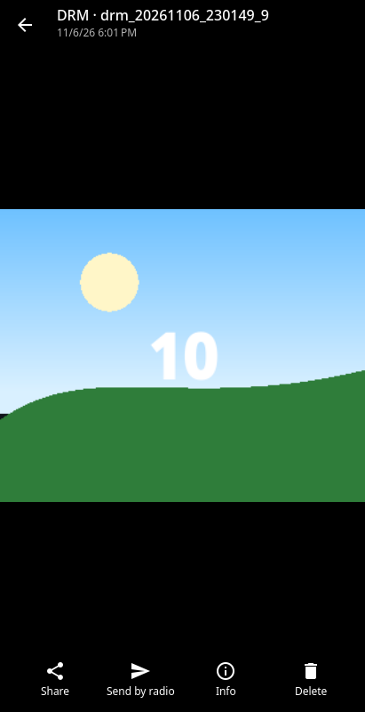
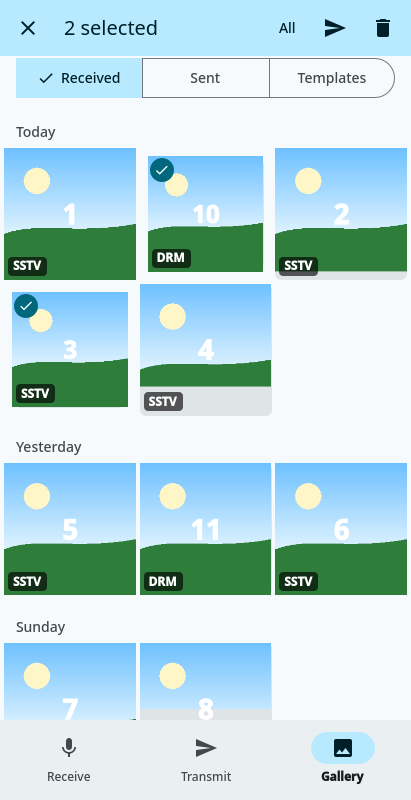
- The tabs Received, Sent and Templates show the pictures newest first, grouped by day, with a badge for the mode (SSTV, DRM or the mode name). There are no pages: the list scrolls.
- Tap a picture to open it on the whole screen. Swipe to the next one; pinch or double-tap to zoom, drag to move; a tap on the picture hides or shows the bars. Under it: Share (to another app), Send by radio (loads it on the Transmit screen; for a template it says Use template), Info (name, time, mode, size) and Delete.
- Touch and hold a picture to select it, then tap others. The bar on top has All, send, share (for one picture) and delete. Back leaves the selection.
- Delete takes the pictures out of the list at once and shows Undo for a few seconds; after that they are removed from the phone.
- Received pictures are also copied to the phone's own picture library, in
Pictures/QSSTV-Experimental. A DRM picture that arrived as JPEG 2000, which Android cannot show, is copied as a PNG, and Share sends a PNG of it too; the picture in the Gallery stays as it was received.
Templates
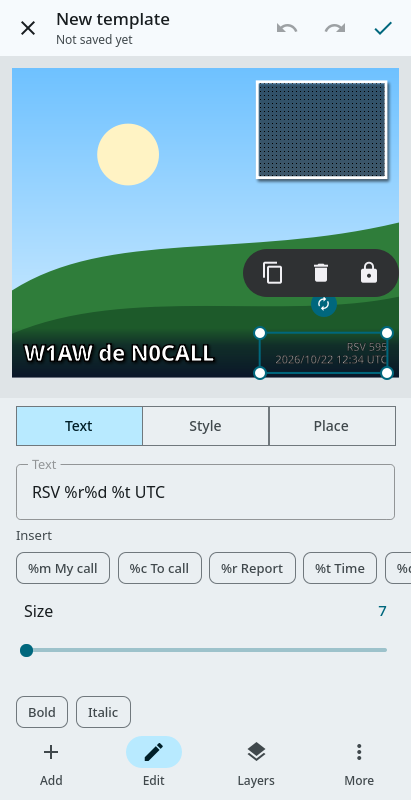
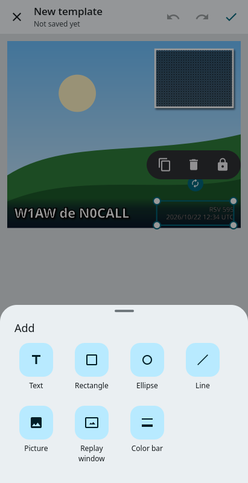
A template puts your call sign, the report, the time and other details on a picture before it is sent. The editor shows the template over a sample picture, with sample values (N0CALL, W1AW, 595) in place of the codes. More > Preview with sample data switches to the codes themselves (%m, %c, %r).
- Start. In the Gallery, on the Templates tab, New template offers a blank template and three starters. To change one you have, open it and tap Edit; from the Transmit screen use the Template row.
- Choose an item with a tap. Move it by dragging it; it snaps to the middle and the edges of the picture. Resize it with the round handles (on a text that is not in a box the corners make the letters bigger or smaller), turn it with the handle above it (it snaps to every 45 degrees; two fingers also work), and use the small bar beside it to Duplicate, Delete or Lock it.
- Edit opens the panel under the picture. Text has the words, chips for the codes (All... lists them with what they mean), the size, the font, Bold and Italic. The font chip (the name of the font, written in that font) opens a list of the fonts of the phone, each name in its own letters; the list is whatever the phone has, so it differs from phone to phone (the fonts made for other scripts, such as Chinese or Khmer, come last under More fonts). Bold and Italic work with every font; one that has no bold or italic of its own is thickened or slanted. A template keeps the name of its font: where that font is missing (a template made on a computer, or on another phone) another font is used to draw it, and the chip turns amber. Style has the fill, the opacity, the stroke, the rounded corners and the shadow. The fill is Solid (one color: tap a swatch, or the last swatch for any color, with its hue, saturation, brightness and opacity) or a gradient, Linear, Radial or Conical. A gradient is a row of colors, the dots under its ramp: choose one to change its color, its position and its opacity, Add or Remove one, Reverse the order, and set the Direction of a linear or conical gradient. The Color bar of the Add list is a rectangle with a linear gradient that fades out: choose Solid to make it one color (it keeps the strongest color of the gradient, and Linear brings the gradient back). Stroke draws a line round the item, outside its edge, so the item keeps its size and its fill is not covered (the letters of a text keep their shape, and the wider the stroke the more they stand out); when you switch it on it gets a width that can be seen, and its color is a swatch or any color. On the replay window the same row is called Border and lies inside its frame. A template made before this had an outline centered on the edge, half of it inside the letters. When you open such a template the strokes of its texts move outside the letters (a note says so; Undo brings the old look back, and leaving without saving asks Keep the changes?); the outline of a rectangle or an ellipse stays as it was until you change its stroke. The shadow has its own color, distances and blur, and the shadow of an item with a gradient fades as the gradient does. Place has the position, size and turn in numbers, with + and − for small steps, and tells how the item follows when the picture is another size.
- Add has text, rectangle, ellipse, line, picture, replay window (where the picture you reply to goes) and color bar. Layers lists the items, front first: tap one to choose it, use the arrows to move it forward or back, and the lock to keep it from being moved by accident.
- Undo and Redo are at the top. The check mark saves; a new template asks for a name once. More > Save a copy as... keeps the original. Leaving with unsaved changes asks Keep the changes?
Some things of the desktop template editor are not on the phone: skew, text box options, choosing several items, aligning, the grid and the import from MMSSTV. Templates made on a computer open here, and the ones made here open on the computer.
Settings
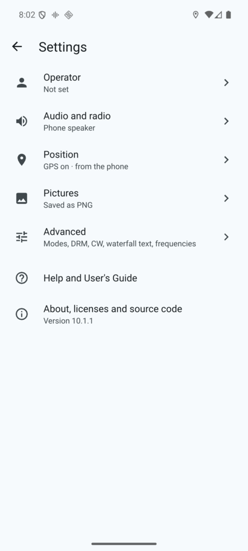
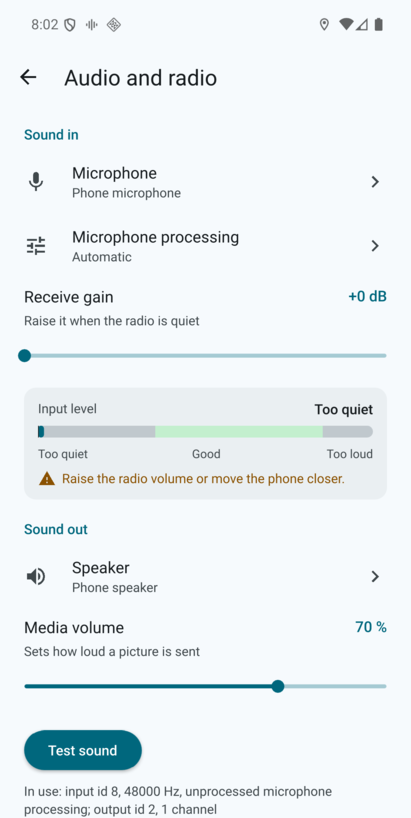
⋮ > Settings shows a list with the current value under each name. There is no OK and no Cancel: a change is kept as soon as it is made. Back goes one level up.
- Operator: call sign, names and city.
- Audio and radio: the microphone and what the phone may do to it, the receive gain, the live input level, the speaker, the media volume, Test sound, and the radio control (see below).
- Position: the phone's position for the pictures, the city and state lookup and the coordinate format.
- Pictures: the file format of received pictures (PNG, JPEG, AVIF ...) and whether to keep a copy of what you send.
- Appearance: the colors of the program (see Looks, large text and screen readers).
- Advanced: Receive (sensitivity, how much of a picture is kept), CW and waterfall (text, tone, speed and the markers), Calibration (the sound clock, see below), Digital (DRM) profiles and Frequencies (see below). Templates goes to the Gallery. Classic settings opens the full list of options of the desktop program.
Calibrating the sound clock
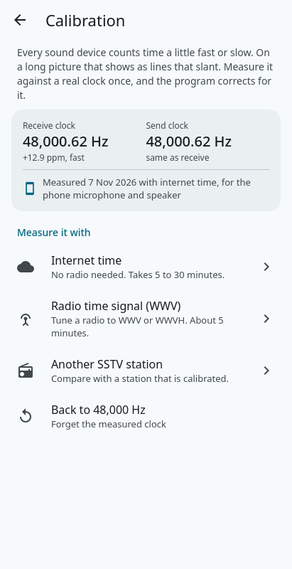
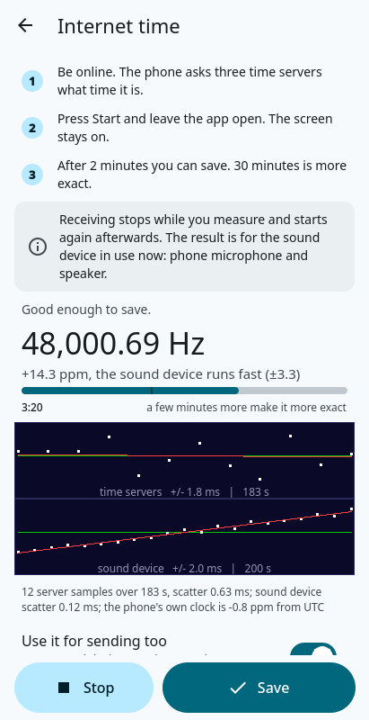
Every sound device counts time a little fast or slow. It shows on the long modes, where the lines of a picture slant. Settings > Advanced > Calibration measures how much, against a real clock, and the program then corrects for it. The page shows the receive clock and the send clock in use (48,000 Hz when nothing was measured) and when and how they were measured. One pair is kept for the whole program, for the sound device that was in use when you measured: if you change to a headset or a USB interface, measure again.
- Internet time needs only a connection. The phone compares the sound it receives with what three time servers say; the servers can be changed on the page. Save lights up after 2 minutes, when the uncertainty is 10 ppm or better; 30 minutes is more exact (ppm: parts per million, 12.9 ppm is 0.0013 %).
- Radio time signal (WWV) uses the one second ticks of WWV (1000 Hz) or WWVH (1200 Hz) on 2.5, 5, 10, 15 or 20 MHz. Hold the phone near the radio's speaker or use an audio cable or interface; the level meter says whether the ticks are loud enough. The tick plot shows a straight vertical line when the clock is right. Save lights up after 20 ticks; about 5 minutes is better.
- Another SSTV station is for when neither is available. One station sends a black picture with one straight line, the other receives it and measures how much the line slants. The result is only as good as the clock of the other station, so one of you must have been calibrated in one of the other ways. Save applies the result and keeps listening, so the next picture shows whether the line is now straight.
While you measure, the screen stays on and receiving stops; it starts again when you leave the page. Use it for sending too (on by default) applies the result to the send clock as well, as most sound devices run input and output from one clock. A result more than 0.2 % off is refused: that is a wrong input, not a clock. Back to 48,000 Hz forgets the measured clock.
Digital profiles and frequencies
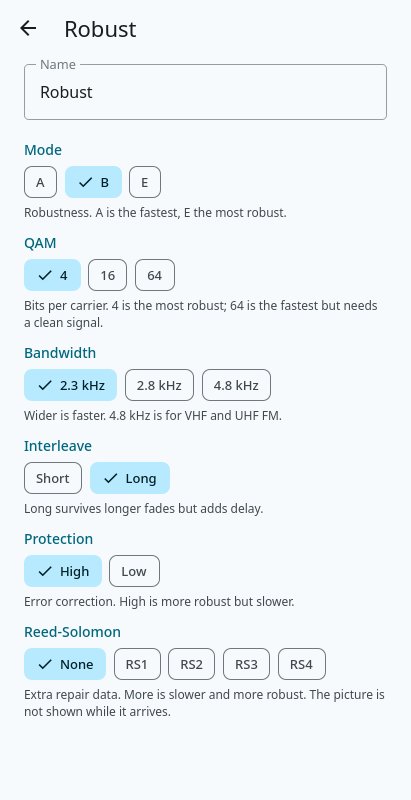
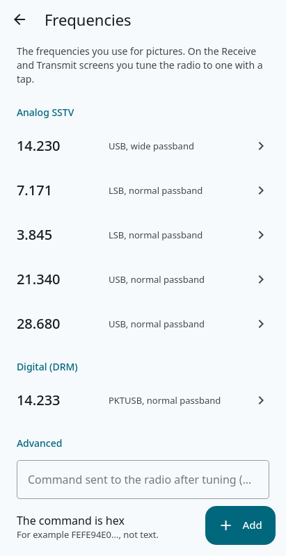
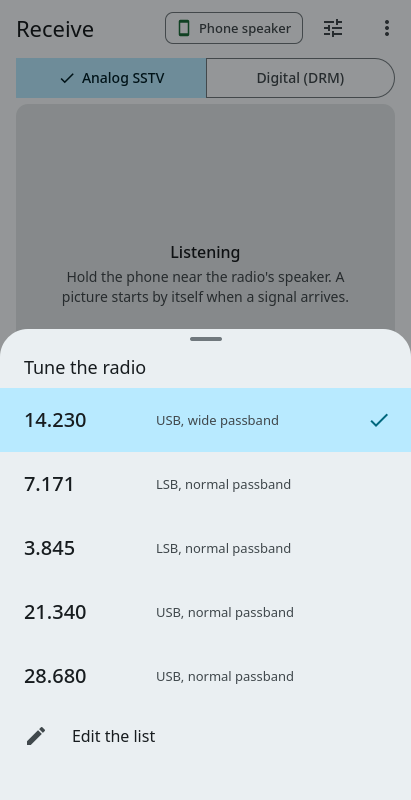
- Digital (DRM) profiles (Settings > Advanced) are three saved sets of digital settings. Each has a name and six choices (mode, QAM, bandwidth, interleave, protection, Reed-Solomon), all in view with a line that says what it does. A change is kept at once, and the Transmit screen shows the profile names as chips. The three profiles of a new installation are all the same: Use typical settings fills in Robust, Balanced and Fast (mode B; 4-, 16- and 64-QAM). The row Edit the profiles at the bottom of the Transmit screen's Digital settings sheet opens the same page. Show the picture while it arrives turns the partial picture of a digital reception on and off.
- Frequencies is the list the program tunes your radio to. A row is a frequency in MHz for analog SSTV or for digital, with the mode of the radio (USB, PKTUSB ...) and the passband. Tap a row to change it; Up and Down move it inside its list, Delete removes it and offers Undo. Add the usual ones fills an empty list. Command sent to the radio after tuning is an optional raw CAT command, as text or as hex.
- Tuning. When a radio is set up (Settings > Audio and radio > Radio), the Receive and Transmit screens show the radio's frequency as a chip. Tap it to see the frequencies for the mode you are in (analog or digital), with the one the radio is on marked; a tap on another tunes the radio to it: frequency, mode and passband, and then the extra command if there is one. Without a radio the chip is not shown.
The microphone and speaker of the phone
Hold or place the phone next to the radio's speaker to receive, and next to the radio's microphone to send: nothing else is needed. This works, but it picks up room noise, so expect pictures to need a stronger signal than with a cable; a headset cable or a USB audio interface is better.
- Receiving. Phones normally clean up what the microphone hears (gain control, noise suppression), which distorts the tones. Settings > Audio and radio > Microphone processing chooses what the phone may do: Automatic uses the unprocessed signal when the phone offers it. Receive gain adds up to 30 dB when the microphone is too quiet. The line In use under Test sound says what the phone opened.
- Sending. The loudness of a transmission is the phone's media volume: use the volume keys of the phone while the program is in front, or the volume slider on the Transmit screen or the Audio and radio page. Android keeps one media volume for each device (the speaker, a Bluetooth headset, a cable), and the keys and the slider change the one of the device Android plays music on. To send through the phone speaker while a headset is connected, set the speaker volume with the headset disconnected, or accept that the keys then change the headset's volume (the program warns you). Around 70 to 80% is a good start; a speaker driven to the maximum distorts. Test sound sends a short test picture (about 12 seconds) the way a real picture is sent: with a radio connected it goes on the air, and it stops with the Stop button. Other apps stop playing while a picture is sent, so a notification does not sound over it.
- The phone speaker plays one channel, so a PTT tone on the second audio channel cannot be used with it (the program says so). Transmitting through the speaker has no PTT line: use a radio with VOX, or key the radio by hand.
- The microphone is only open while the program receives or transmits. After a few seconds of neither it is released (so Android's microphone indicator goes out).
Receiving with the screen off
While the program is receiving it runs as a foreground service, with a notification. Receiving goes on with the screen off or with another app in front. Android may still stop apps in the background on phones with aggressive battery savers: if reception stops after a while, set the battery use of the program to unrestricted in the Android settings.
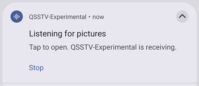
The notification says what the program does: Listening for pictures, or Sending (with the mode and the time of the picture). Its Stop button ends what runs: the picture that is being sent, otherwise the receiver, and the notification goes with it. Tap the notification itself to open the program.
Back and the icon
- Back (the gesture or the button of the phone) goes one step back: a sheet closes, a page returns to the one before, another tab returns to Receive. On Receive with nothing open it takes the program to the home screen without ending it: the receiver keeps running in its service. To end it, press Stop on Receive or in the notification, and leave.
- Hold the icon of the program on the home screen: Receive, Transmit and Gallery open the program on that screen.
- Share a picture to the program from the photos app (or Open with from a file manager): it is put on the Transmit screen.
A radio interface on USB (CAT and PTT)
A USB serial adapter or interface with a CP210x, FTDI, CH340/CH341, Prolific or CDC chip (the Digirig is one) is used instead of a serial port. Plug it in through an OTG adapter or a USB-C cable; Android offers to open this program, and asks once, from a box, whether the program may use that device.
- Under Settings > Audio and radio > Radio control: USB interface lists the connected adapters by name; Radio opens the list of supported radios with a search box (type TS-480 or IC-7300), or No radio control; Push to talk chooses None (VOX), the RTS or DTR line of the adapter, or a CAT command; Speed is the baud rate of the radio.
- Test push to talk keys the transmitter for about a second: lower the power or disconnect the antenna first.
- Many such interfaces (the Digirig for one) also carry the audio: choose it as the Microphone and the Speaker. Only one program can use the adapter at a time.
- A radio with its own USB socket usually shows up as such an adapter. A radio that is only reached through a program on a computer (a network rig server) is not supported on the phone.
Position (GPS)
The phone's own location is used: there is no port or speed to set. Settings > Position > Use the phone's position switches it on; Android asks once for permission to use the precise location while the program is in use, and the row Position now then shows where the phone is (or why it cannot tell). The pictures then carry the position. Nothing leaves the phone unless you also switch on Look up city and state, see the privacy policy. Switching it on looks the place up at once, and the row Location now below it shows the city and state that was found (or why it could not be), and follows the lookups that come later as the phone moves.
Looks, large text and screen readers
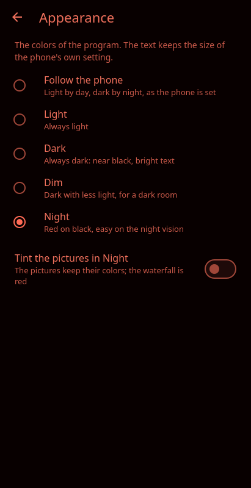
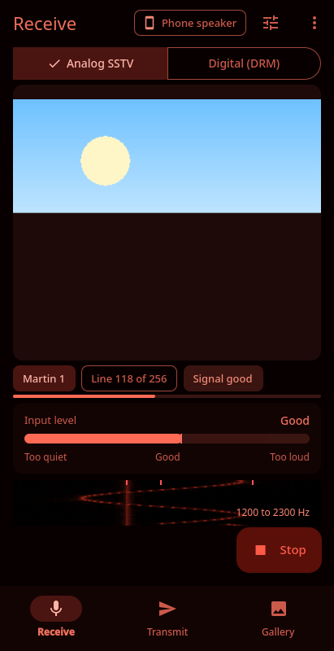
- Settings > Appearance chooses the colors. Follow the phone (the default) is light by day and dark by night as the phone is set; Light and Dark keep one of them; Dim is a dark with less light in it, for a dark room; Night is red on black, with no blue or green light, so that the eyes of someone watching the sky or the band keep their night vision. The status that is green or amber in the other looks (Listening, Good) is told by its word and its icon in Night.
- In Night the waterfall is red. The pictures keep their colors unless Tint the pictures in Night is on: they are then shown in red too (the files are not changed). The bars of the phone itself (the clock and the icons at the top) are the phone's and stay as they are, and so do the Classic settings and the boxes of the system (file pickers, permission questions), which keep their own colors.
- The program follows the phone's text size setting. At a large size the route chip shrinks to an icon and the mode button to SSTV | DRM, and lists scroll.
- With the phone's Remove animations on (Settings > Accessibility), sheets and pages appear without sliding or fading. What shows the live state (the picture that grows, the waterfall, the level meter) keeps moving.
- Every control has a name for TalkBack and the other screen readers. Controls are at least 48 by 48 dp to touch. The screens behind a full-screen page such as Settings are hidden, so a screen reader reads only what is in front.
- The phone gives a short vibration when you change the mode, select a picture, start a transmission or when a picture is saved.
What is not on the phone yet
The repeater and unattended beacon, FTP upload, the XML-RPC interface, the command line options, the update check (Google Play updates the program) and the AppImage and Windows installers. The classic settings reached from Advanced still hold the options that have no page of their own.
If something does not work
- No reception. Look at the input level on Receive (or Settings > Audio and radio): it says Too quiet when nothing arrives. A red banner on Receive means the microphone permission is missing (Allow opens the Android settings, Apps > QSSTV-Experimental > Permissions). A phone call or another app can hold the microphone.
- Too quiet or distorted transmission. Set the media volume (see above). Bluetooth audio is not suitable for receiving: Android gives it a narrow band.
- The adapter does not show up. Unplug it and plug it in again, and answer the permission box. Cheap cables that only charge do not carry data. If it still is not listed, report the chip name and the model in an issue.
- A problem report helps most with the version (⋮ > About), the phone model, the Android version and, for audio, the line starting In use on the Audio and radio page.